. Assume first, that the reaction is irreversible with the rate given by:
. Assume first, that the reaction is irreversible with the rate given by:Consider a constant-volume well-stirred reactor carrying out the gas-phase dimerisation reaction:
at a given temperature, .
The mathematical model of this system comprises the equations:
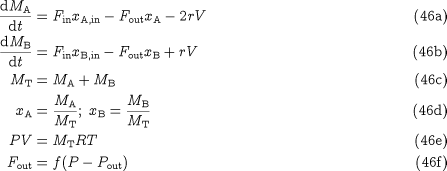
Here we have assumed perfect-gas behaviour (equation 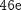) and that the exit flowrate is a function of the difference between the pressure in the reactor and the downstream pressure, 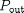 (equation 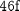).
To complete the above model, we need to characterise the reaction rate, . Assume first, that the reaction is irreversible with the rate given by:
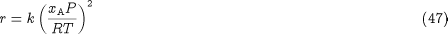
We note that equations 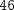 and form a set of 8 DAEs in the 8 unknowns  ,
,  ,
,  , ,
, ,  ,
,  ,
,  and . The system involves two differential variables ( and ). If we specify arbitrary values of 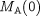 and
and . The system involves two differential variables ( and ). If we specify arbitrary values of 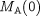 and  , then:
, then:
Hence, this is an index-1 system, which can be solved without much difficulty.
Consider, however, what happens if the dimerisation reaction takes place under conditions of chemical equilibrium, i.e.:
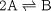
For an ideal gas mixture, will be replaced by an equilibrium relation of the form:

where 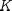 is the equilibrium constant. Since the temperature is fixed, also has a constant value.
Once again, the DAE system and 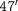 comprises 8 equations in the same 8 unknowns as before. If we specify and , we can again compute  from
from  ;
;  and
and  from ;
from ;  from and from . However, we now note that all variables in have already been computed, and therefore this equation is either redundant or inconsistent. Moreover, we cannot get
unique values for , and from the remaining two equations and .
from and from . However, we now note that all variables in have already been computed, and therefore this equation is either redundant or inconsistent. Moreover, we cannot get
unique values for , and from the remaining two equations and .
As we have seen previously, the above are clear sympotoms of a high-index DAE system. In fact, by combining with and , we obtain:
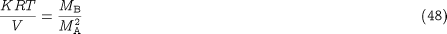
The left hand side of  is just a constant. Therefore, and are related to each other and cannot be specified arbitrarily. This is the underlying cause of the high index.
is just a constant. Therefore, and are related to each other and cannot be specified arbitrarily. This is the underlying cause of the high index.
Equation also provides a way of determining . We can write is as:

which, upon differentiation with respect to time, yields:
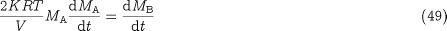
We can then use and to eliminate and . Solving the resulting equation for , we obtain:
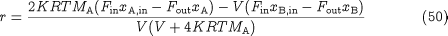
A consistent set of initial variable values must satisfy , and 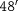 at time . Thus we have 9 equations in the 10 unknowns , , , , , ,  , , and , which leaves only one degree of freedom in the specification of the initial conditions.
, , and , which leaves only one degree of freedom in the specification of the initial conditions.
Once we have a consistent set of initial values, we can solve the index-1 system and using standard algorithms.